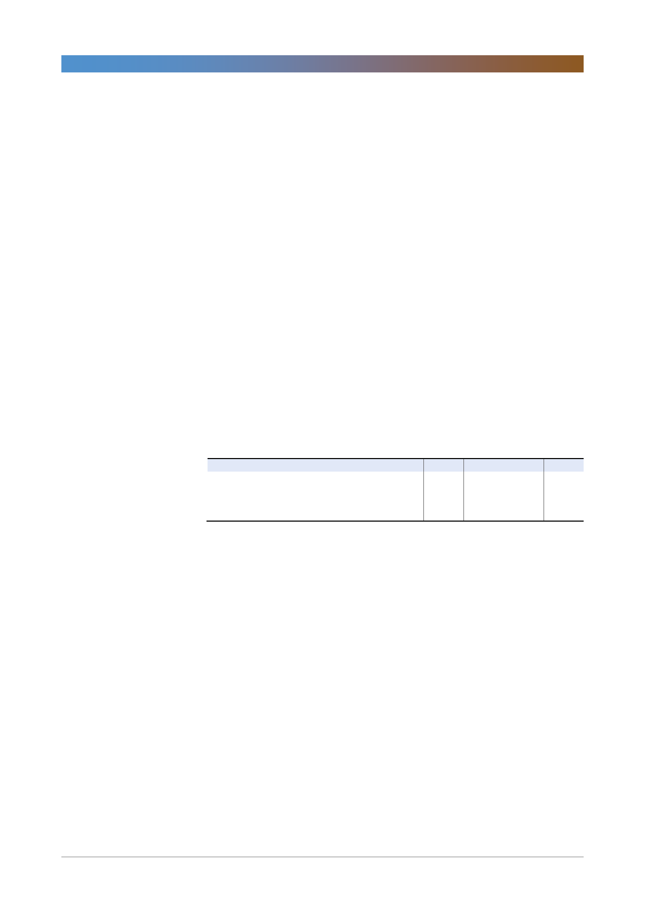

삼성생명(032830)
Q5. 과거 3,4년에 비해 이차원마진에 대한 전망이 많이 보수적인 것 같다. 저축
성/연금보험과 같이 준비금 구조를 빠르게 게선할 수 있는 상품의 비중이 줄
어든다고 해석해도 될 지?
- 이원차마진에 대한 보수적 전망은 금리 연동상품 물량 확보 어려운 것 보다
과거 고금리 자산의 만기로 보유이원을 감소시키는 영향이 더 큼
- 금리 상승 기조 전망 유지 시, 2019년 말부터 이원차역마진 축소 가능할 것
Q6. 전자지분 해소 방안. 처리 후 소액주주들로 돌아오는 혜택 여부. 향후 계획
및 타임라인?
- 삼성생명의 전자지분 이슈는 금융지주법, 보험업, 금산분리 등 고려해야 할
사안이 많음
- 금산법 상 삼성전자가 자사주 소각 시 삼성생명/화재 등 금융사의 전자지분
이 10%를 초과되는 것이 이슈
- 이에 따른 초과지분 매각 시기와 그 방법 등 검토 중이나 그 이외에 금융지
주회사법, 보험업 등은 규정이 불분명해서 내부적으로 검토 안하고 있음
- 전자지분 매각에 따른 이익이 주주배당재원에 포함되는 것은 분명함. 2014
년 물산 주식 매각 시 발생된 5천억 매각이익도 배당재원에 포함해서 배당
실시 했었음
- 전자 지분 매각 관련해서는 구체적인 매각방안 아직 알려드리기 어려워 추
후 정해지면 배당성향과 같은 관련 내용을 IR팀을 통해 공시할 것
<표 1> 1분기 실적 및 컨센서스
보험영업수익
보험손익
투자손익
당기순이익
1Q17
4,465
506
2,032
566
2Q17
4,180
475
1,669
381
주: 당기순이익은 지배주주순이익 기준
자료: 한국투자증권
3Q17
4,222
205
1,712
320
4Q17
4,080
(181)
1,564
(72)
1Q18
4,103
(384)
1,981
390
QoQ(%)
0.6
NM
26.6
NM
(단위: 십억원)
YoY(%)
(8.1)
NM
(2.5)
(31.1)
컨센서스
4,290
319
1,961
449
3